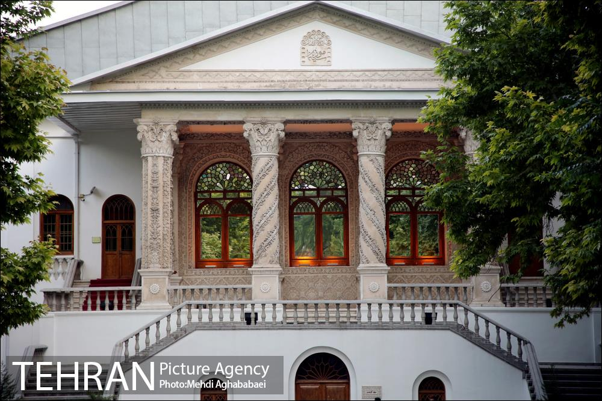
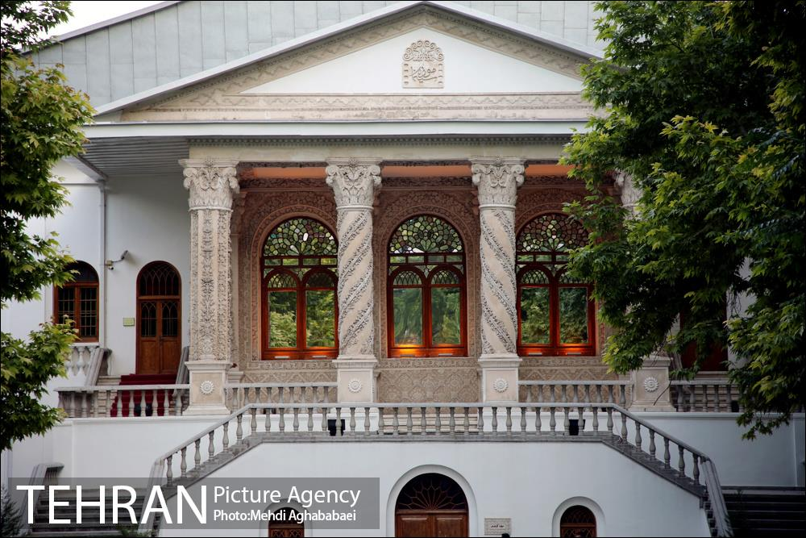

باغ فردوس تهران
تهران، تجریش، منطقه یک، خیابان ولی عصر
معرفی
باغ فردوس که با نام باغ موزه فردوس، باغ معیری و موزه سینما نیز شناخته میشود؛ یکی از باغها و جاهای دیدنی تهران است که در محله خوش آبوهوای باغ فردوس در شمال این شهر قرار دارد. این باغ در سال ۱۳۸۱ به موزه سینمای ایران تبدیل شده است. قدمت این باغ به دوران قاجار و پادشاهی محمد شاه میرسد و از آثار ملی کشور محسوب میشود.
اطلاعات بیشتر 


مسیر دسترسی به باغ فردوس تهران
برای رسیدن به موزه سینما میتوانید در خط یک مترو به ایستگاه تجریش رفته و پس از خروج از ایستگاه در میدان قدس، با ۲۰ دقیقه پیادهروی در خیابان ولیعصر بهسمت جنوب، به عمارت باغ فردوس برسید، یا اینکه این مسیر را با تاکسی یا بی آر تی طی کنید.
اگر قصد استفاده از بی آر تی را دارید، میتوانید از اتوبوسهای مسیر تجریش - راهآهن استفاده کنید و در ایستگاه باغ فردوس از اتوبوس پیاده شده و به این باغ بروید.
با مینیبوسهای خط تجریش به ولنجک به خیابان ولیعصر رفته و روبهروی باغ از آن پیاده شوید.
اگر با ماشین شخصی به باغ فردوس میروید، بهتر است بدانید پیداکردن جای پارک مشکل است و بهتر است اتومبیل خود را در یکی از کوچههای اطراف پارک کنید. نزدیکترین پارکینگ عمومی، در میدان تجریش واقع شده است.
آدرس باغ فردوس تهران: خیابان ولیعصر (شمال)، بعد از سه راه زعفرانیه، نرسیده به تجریش، باغ فردوس.
نظر شما درباره این مکان چیست؟